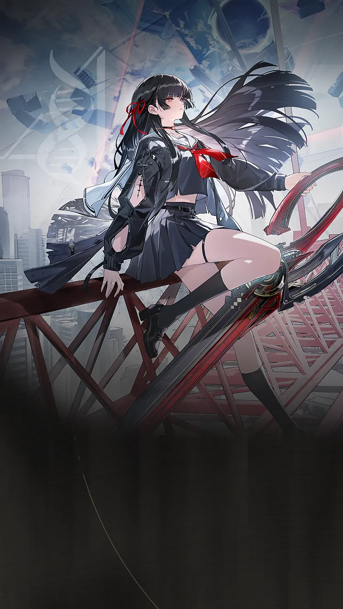
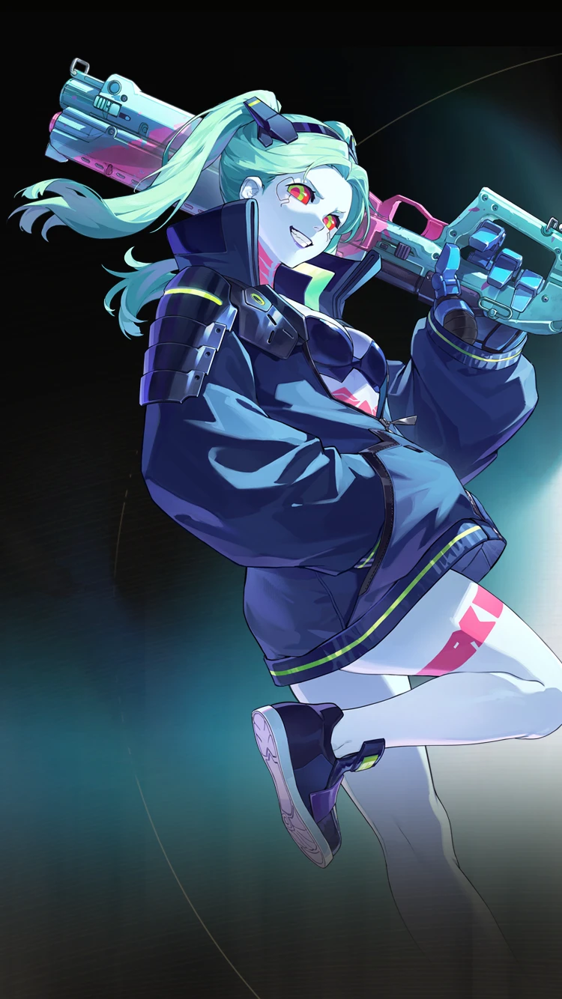

Wuthering Waves Resonator guide
Chisa build, teams, weapons, and Echoes
Havoc support with sustain utility.
Personal notes
Optional profile-aware info that keeps the main guide unchanged.
No profile connected on this browser yet.
Log in above to load an existing WaveKit profile, or use the team helper to mark your Resonators and weapons for Chisa.
Skill priority
Team compositions
 Main damageYangyang: XuanlingLeads the damage plan
Main damageYangyang: XuanlingLeads the damage plan
Setup helperRebeccaSets up the damage dealer Support slotChisaCompletes the team
Support slotChisaCompletes the teamChisa supports Yangyang: Xuanling alongside Rebecca. Yangyang: Xuanling is a Havoc Bane and Heavy Attack hypercarry. Rebecca, Lynae, and Phrolova are her primary helpers; Chisa is the strongest general third slot, Mornye suits the Lynae route, and Verina is an easy-to-build alternative.
 Main damageCartethyiaLeads the damage plan
Main damageCartethyiaLeads the damage plan Setup helperCiacconaSets up the damage dealerSupport slotChisaCompletes the team
Setup helperCiacconaSets up the damage dealerSupport slotChisaCompletes the teamChisa supports Cartethyia alongside Ciaccona. Cartethyia's best specialist route is Ciaccona plus Chisa. Aero Rover is the free healing alternative, while Shorekeeper and Verina are comfort options. Cartethyia's Sequence 2 raises the Erosion stack limit and reduces the third slot's mechanical burden.
 Main damageAemeathLeads the damage plan
Main damageAemeathLeads the damage plan Setup helperDeniaSets up the damage dealerSupport slotChisaCompletes the team
Setup helperDeniaSets up the damage dealerSupport slotChisaCompletes the teamChisa supports Aemeath alongside Denia. Aemeath's modes are kept separate: Denia with Chisa or Lupa for Fusion Burst, Lynae with Mornye for Tune Rupture, and Lupa with Mornye or another Fusion partner for Mono Fusion.
Use these grouped options to understand the wider roster around the complete teams above.


These characters appear in reviewed teams, but every possible combination is not guaranteed. Use the complete teams above as the safest starting point.
New player reading guide
If you are only checking Chisa before building a profile, start by confirming their role, weapon type, Sonata, and whether they need a real healer or a specific helper.
Chisa guide overview
Chisa is a Havoc Support with Sustain in Wuthering Waves. Its recommended build starts with Kumokiri, while its Echo plan uses Thread of Severed Fate, Havoc Eclipse. The guide also covers stat priorities, compatible teammates, and a practical rotation.
Quick build
- Role
- Support with sustain
- Team type
- Bane
- Best weapon
- Kumokiri
- Alternate weapons
- Wildfire Mark / Ages of Harvest / Meditations on Mercy
- Sonata
- Thread of Severed Fate, Havoc Eclipse
- Echo cost
- 4-3-3-1-1
- Main Echo
- Reminiscence: Threnodian - Leviathan
- Main stats
- Crit Rate or Crit DMG / ATK% or Havoc DMG / ATK%
Stat priority
- Priority 1: Energy Regen to roughly 125-130%
- Priority 2: CRIT Rate and CRIT DMG
- Priority 3: ATK% for damage, shields, and healing
- Priority 4: Resonance Liberation DMG Bonus
Resonance Chain overview
Each Resonance Chain level comes from duplicate copies of this Resonator. Expand a level for the exact in-game effect and use the short line for a quick read.
Playstyles and modes
Bane specialist
Her strongest value comes from teams that actively use Bane mechanics and want her specialist amplification.
Comfort sustain
Her healing and defensive utility can cover a support slot, but her sustain profile differs from a pure healer.
Chain effects
R1Wandering Through the Desolate CorridorsChisa is immune to interruption during Sawring - Blitz, Sawring - Eradication, and Chainsaw Mode - Dodge Counter Inflicting Unseen Snare grants the following additional effects: - Chisa's ATK is increased by 3…+
Chisa is immune to interruption during Sawring - Blitz, Sawring - Eradication, and Chainsaw Mode - Dodge Counter
Inflicting Unseen Snare grants the following additional effects:
- Chisa's ATK is increased by 30% for 15s.
- Deal fixed 61803 points of Havoc DMG. The target's HP can be reduced to 61.80% at most and each target can take this damage only once. This instance of damage is considered Basic Attack DMG that does not bear any effect from damage bonuses.
R2Into the Web of Endless BondsIgnore 10% of the target's Havoc RES when dealing damage.…+
Ignore 10% of the target's Havoc RES when dealing damage.
Nearby Resonators in the team with Thread of Bane gain 50% All-Attribute DMG Bonus.
R3Across the Confusion of the Long NightThe DMG Multipliers of Sawring - Blitz, Chainsaw Mode - Dodge Counter and Sawring - Eradication are increased by 120%.…+
The DMG Multipliers of Sawring - Blitz, Chainsaw Mode - Dodge Counter and Sawring - Eradication are increased by 120%. This effect is mutually stackable with that of Woven Myriad - Convergence.
The bonus DMG Multiplier for Sawring - Eradication granted by Sawring- Blitz and Chainsaw Mode - Dodge Counter when Ring of Chainsaw is consumed is increased by 120%. This effect is mutually stackable with that of Woven Myriad - Convergence.
The Vibration Strength Reduction Rate of Sawring - Blitz, Chainsaw Mode - Dodge Counter and Sawring - Eradication is increased by 50%.
R4Severing the Endless Cycle of Tragic FateThe effect of Unseen Snare becomes: When targets marked by Unseen Snare take direct damage from Resonators, Chisa inflicts 1 stacks of Havoc Bane on them.…+
The effect of Unseen Snare becomes:
When targets marked by Unseen Snare take direct damage from Resonators, Chisa inflicts 1 stacks of Havoc Bane on them. This effect is triggered up to once every 1s.
R5Thousands of Lights to Guide the Way HomeResonance Liberation Moment of Nihility gains 100% DMG Bonus.…+
Resonance Liberation Moment of Nihility gains 100% DMG Bonus.
Lifethread - Glide costs 50% less Lifethread - Jetstream.
R6Thus, Hope is Rekindled with the Rising DawnWhen Chisa takes a fatal blow during Sawring - Blitz, Sawring - Eradication, and Chainsaw Mode - Dodge Counter, she will remain standing with at least 1 HP.…+
When Chisa takes a fatal blow during Sawring - Blitz, Sawring - Eradication, and Chainsaw Mode - Dodge Counter, she will remain standing with at least 1 HP.
Unseen Snare becomes Unseen Snare - Finality, which has the following effects:
- Unseen Snare - Finality has all the effects of Unseen Snare.
- Targets affected by Unseen Snare - Finality takes 30% Amplified DMG from Negative Statuses.
- Targets affected by Unseen Snare - Finality takes 40% increased DMG from Chisa.
Effect names, numbers, and conditions follow current public game-data records. WaveKit keeps the full wording available so important conditions are not lost in a tier label.
Simple play pattern
- Build enough Energy Regen so Chisa can heal before panic moments.
- Use support/healing setup first, then leave field time for the damage dealer.
- Prioritise consistency over perfect damage if you are still learning fights.
Build priority
- Difficulty
- Low stress
- Safety
- Real sustain
- Data note
- Guide checked
Chisa is worth building for account comfort because sustain units make more teams easier to play.
Chisa FAQ
What is the best Chisa build in Wuthering Waves?
Chisa's recommended WaveKit setup is Havoc Bane Support Build, using Kumokiri, Thread of Severed Fate, Havoc Eclipse, and Reminiscence: Threnodian - Leviathan as the main Echo target.
What stats should Chisa use?
Start with Crit Rate or Crit DMG / ATK% or Havoc DMG / ATK%. If the rotation feels uncomfortable, improve Energy Regen or defensive comfort before chasing perfect substats.
What teams work with Chisa?
Chisa is flexible, so the best team depends on the Resonators and weapons you own.
Is Chisa beginner friendly?
Chisa's current difficulty is listed as Low stress. If you are learning, pair them with safer sustain or defensive support.